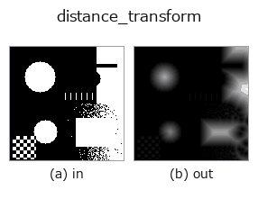

region op• 数据种类:region → image
• 调用:fullseye.apply(img, "distance_transform", a=0.5, b=0.5)(2-D 的模型是一张图 + 两个标量旋钮 a,b∈[0,1])
• HALCON 对应:distance_transform(其含义与参数可参考 HALCON 手册)

*图为在 128×128 合成输入上实际运行的输出。左为输入，右为输出(非图像的返回值直接显示其值)。*
以最大值归一化后的欧几里得距离变换(`ndimage.distance_transform_edt)图像。表示每个前景像素到最近背景像素的距离——数值越大,说明该像素越处于区域的"深处"。请注意输出类型是 image 而不是 region。相当于 HALCON 的 distance_transform`(Compute the distance transformation of a region.)。
> 以下的详细说明为原文 —— 摘要与标题已翻译。
`a, b` は未使用。
• 示例数据目录(下载 URL / 许可证) —— 2-D 用 skimage.data(BSD/公有领域)加合成图,3-D 给出真实数据源(Stanford/PDS 等)的下载 URL。
• 算子来历与参考文献 —— 该算子族所依据的研究/方法出处。
• 算法的正典(作者・年份)与用途见上面的族使用指南。
下面的程序已确认可以运行(与图相同的输入)。在 Studio 帮助中，此块会变成按钮，可当场加载并运行。
threshold 0.50 0.50 distance_transform 0.50 0.50
▸ Load this pipeline · Load & run
• gallery2d_region — py -3.11 examples/gallery2d_region.py
• poc_cell_counting — py -3.11 examples/poc_cell_counting.py
• poc_crack_width — py -3.11 examples/poc_crack_width.py
• poc_particle_sizing — py -3.11 examples/poc_particle_sizing.py
• poc_vessel_network — py -3.11 examples/poc_vessel_network.py
image 作为输入)identity · gaussian · mean_box · bilateral · unsharp · median · min_filter · max_filter
region)reg_erode · reg_dilate · reg_open · reg_close · fill_holes · select_largest · remove_small · invert_region
*Provenance: ops.py — 2D 算子登记表。本条目由 tools/opdocs.py md 自动生成(请勿手工编辑)。*
© 2026 Kazufumi Furuse — Fullseye operator documentation. Licensed under Apache-2.0.